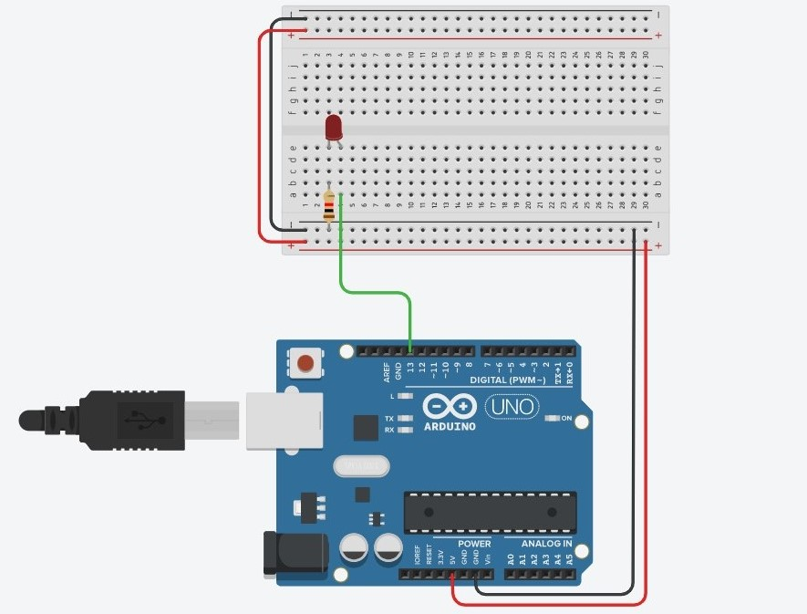
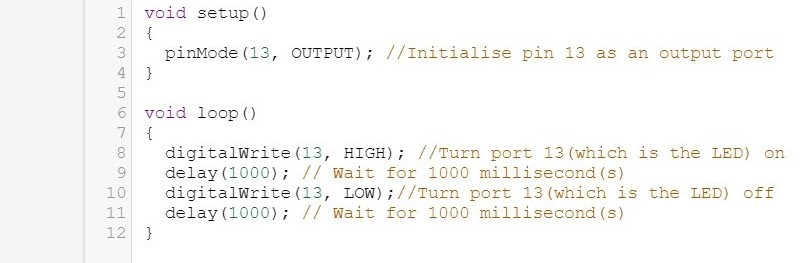
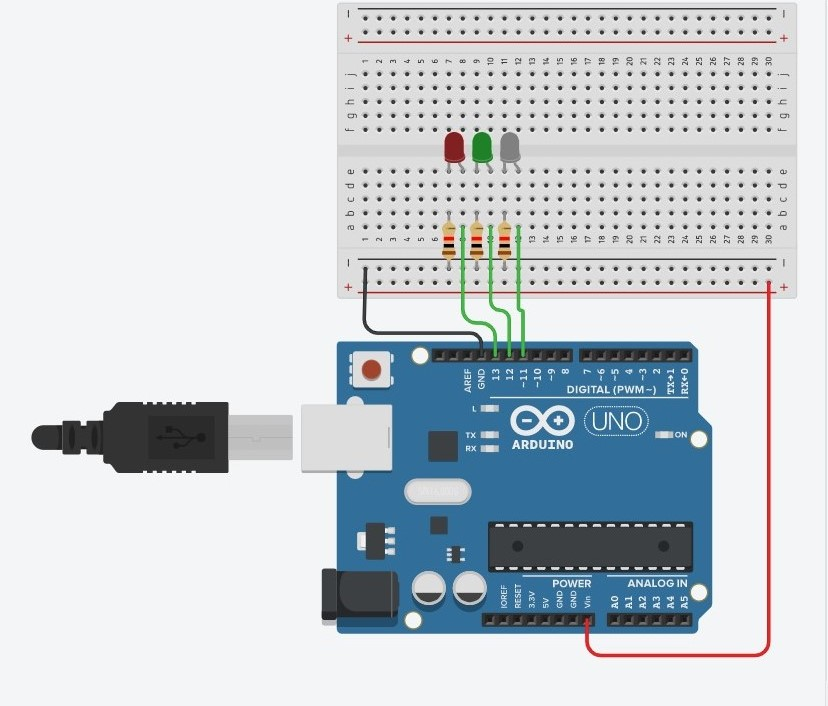
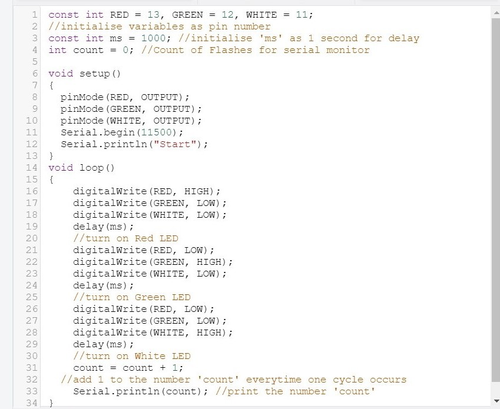
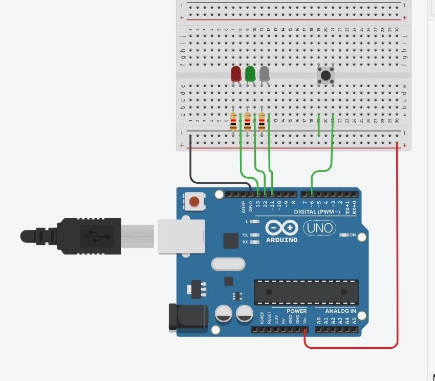
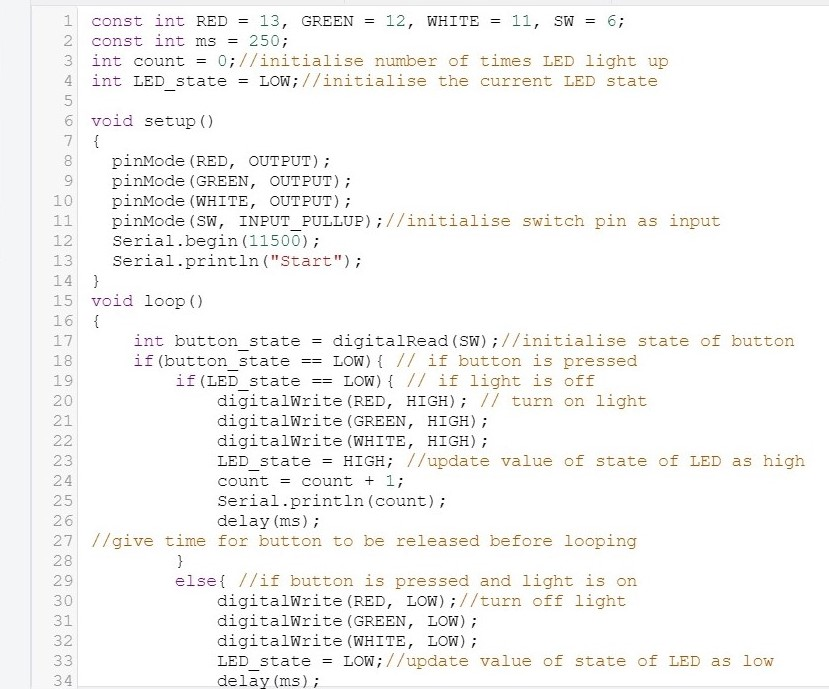

Task 1
Connect a LED with a current limiting resistor to the Arduino Uno board. Write a program to blink the LED in a variety of patterns.
And here is the code
Task 2
Using the same technique, connect 3 or more LEDs of different colors to the Arduino board. Write a program to produce running lights i.e. the LEDs are lit in sequence e.g. Red -> Green -> White -> Red -> Green -> White and so on.
And here is the code
Task 3
Add a switch to the circuit in task 2. You should use a pull-up resistor of 10K if you are operating in INPUT mode. When the switch is pressed, the LEDs will light up. Pressing the switch again will turn the LEDs off. Write and test this program.
And here is the code
